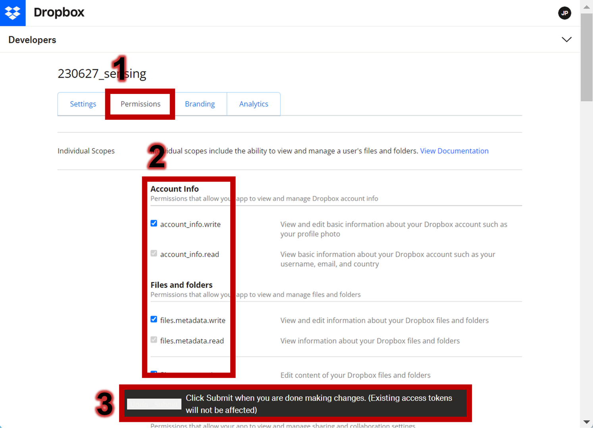
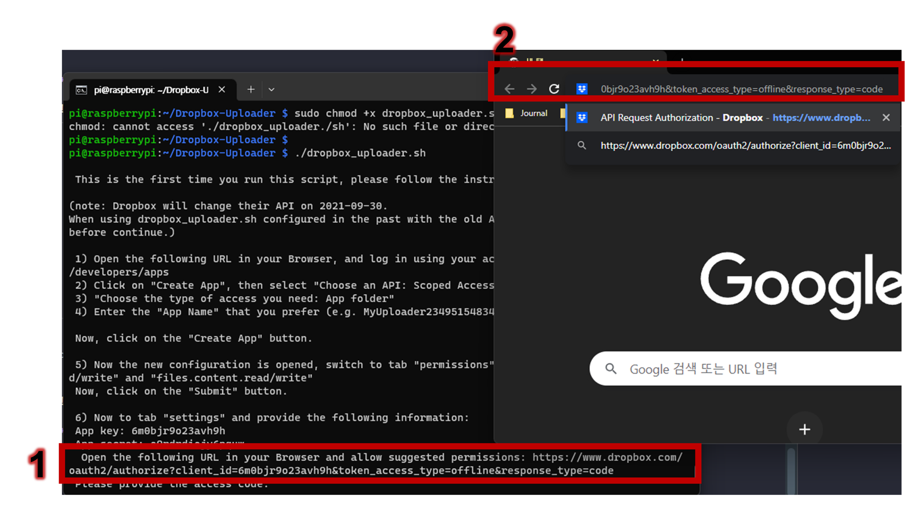

3 Raspberry Pi Setup
This section covers preparing your Raspberry Pi OS (3.1), transforming it into a file server for easy file sharing (3.2), and configuring it to send status updates to cloud storage for remote monitoring (3.3).
3.1 Prepare Your Raspberry Pi OS
3.1.1 Update Your Pi
Start by updating your Raspberry Pi’s operating system (OS) to its latest version. Open a terminal window and enter the following commands:
sudo apt-get update -y && sudo apt-get upgrade -yFor copy, you could click this icon to copy the command:
For paste, there are various ways; please visit this when Ctrl+V doesn’t work in the terminal.
In Linux systems, sudo stands for “superuser do”, similar to “Run As Administrator” in Windows. The -y flag automatically confirms any prompts during the update process. The apt-get update command refreshes the list of available packages and their versions, while apt-get upgrade installs the latest versions. You can learn basic Linux commands on websites like this.
The given command should be placed like this:
After the updates are complete, restart your Raspberry Pi using this command:
sudo reboot3.1.2 Update Your Pi
Before starting any kind of system-wide transformation, it’s important to have the necessary administrative privileges. On Raspberry Pi, you can enter the superuser mode (or root mode) by using the command:
sudo su3.2 Transforming Your Pi into a File Server
This process allows easy sharing of files between a Raspberry Pi and other devices, such as laptops and PCs. Samba, an open-source secure network file-sharing system, enables this transfer. By setting up Samba, files can be conveniently transferred to and from a laptop within your network to a Raspberry Pi, via a direct Ethernet connection.
3.2.1 Install Samba
Enter the following command in your terminal to install Samba:
sudo apt-get install -y -q samba samba-common-bin3.2.2 Modify the Samba Config File
To share the Pi’s folder, modify the Samba config file using the following command:
sudo nano /etc/samba/smb.confMove to the end line by pressing Alt + / and add this:
[share]
path = /home/pi
writeable=Yes
create mast=0777
directory mast=0777
public=no
Press Ctrl + X, then Y, followed by Enter to save the changes.
3.2.3 Set Up a Samba User
Set up a user for your Samba share on your Pi using this command:
sudo smbpasswd -a piThen, enter the password twice as prompted by the command. In this case, the password is raspberry.
3.2.4 Restart Samba Services
Restart the Samba services to apply the changes by typing this:
sudo service smbd restartsudo service nmbd restart3.2.5 Access the Pi Directory
Open the File Explorer (press Win + E), type in the address raspberrypi/pi, then enter the Pi’s name and password as network credentials.
3.2.6 Create and Verify the Test File
Create a text file in your Pi’s directory using the following command.
sudo nano test.txtAfter typing anything (e.g., ‘gg’) in the file, press Ctrl + x, then y, followed by Enter. You should then be able to see the file on your laptop.
3.3 Setting Up Cloud Storage Access on Your Pi
This step involves configuring your Raspberry Pi to send status data to your cloud storage. It’s essential to ensure that your Pi is properly set up before or during its installation. Typically, you might consider connecting a monitor, mouse, and keyboard to your Pi to check its status, but that’s not always practical or convenient.
Instead, we recommend setting up your Pi to relay status updates - such as available storage space - to your chosen cloud storage. Once your Pi starts sending these updates, you can easily monitor its status by accessing and reviewing these files in the cloud storage. This method allows you to remotely track the setup progress and address any potential issues promptly.
3.3.1 Create a Dropbox App
In this guide, we will be utilizing Dropbox as our cloud storage service. You need to first set up an app on Dropbox to interface with the service. Follow the steps below:
- Navigate to the Dropbox developer page.
- Sign in or create an account if you haven’t done so already.
- Once you’re logged in, proceed to create a new application.

3.3.2 Modify the Permission
Configure your application to permit the viewing and management of files and folders. In this instance, we’ve selected all the available options in the permission settings (for the indivisual scope).

3.3.3 Install the Necessary Packages
Switch to a superuser shell session by typing this command:
sudo suMake sure that curl and git packages are installed on your Pi. You can do this by entering the following command:
sudo apt install curl git -y3.3.4 Install the Dropbox Uploader
Download the Dropbox Uploader script onto your Pi using this command:
git clone https://github.com/andreafabrizi/Dropbox-Uploader.git3.3.5 Assign Execution Permission
Move into the cloned directory and give the executable permission to the script by using these commands:
cd Dropbox-Uploadersudo chmod +x dropbox_uploader.sh3.3.6 Validate App Permissions on Your Pi
Begin the Dropbox Uploader configuration with the following command:
./dropbox_uploader.shEnter your app key and app secret in the terminal:

Copy and paste the given URL into a web browser, then click ‘Continue’ and ‘Allow’ to authorize the permissions.

Copy and paste the generated access code to the terminal.
3.3.7 Verify Cloud Storage Access
Employ the upload function to transmit a ‘README.md’ file by executing this command:
./dropbox_uploader.sh upload README.md /You should be able to view the file that was sent by executing the command.
Go back to the home directory by executing the command:
cd /home/pi